G05 · S49 · Grok — Rain lane / navigationNeeds revision · camera / anatomy / framing
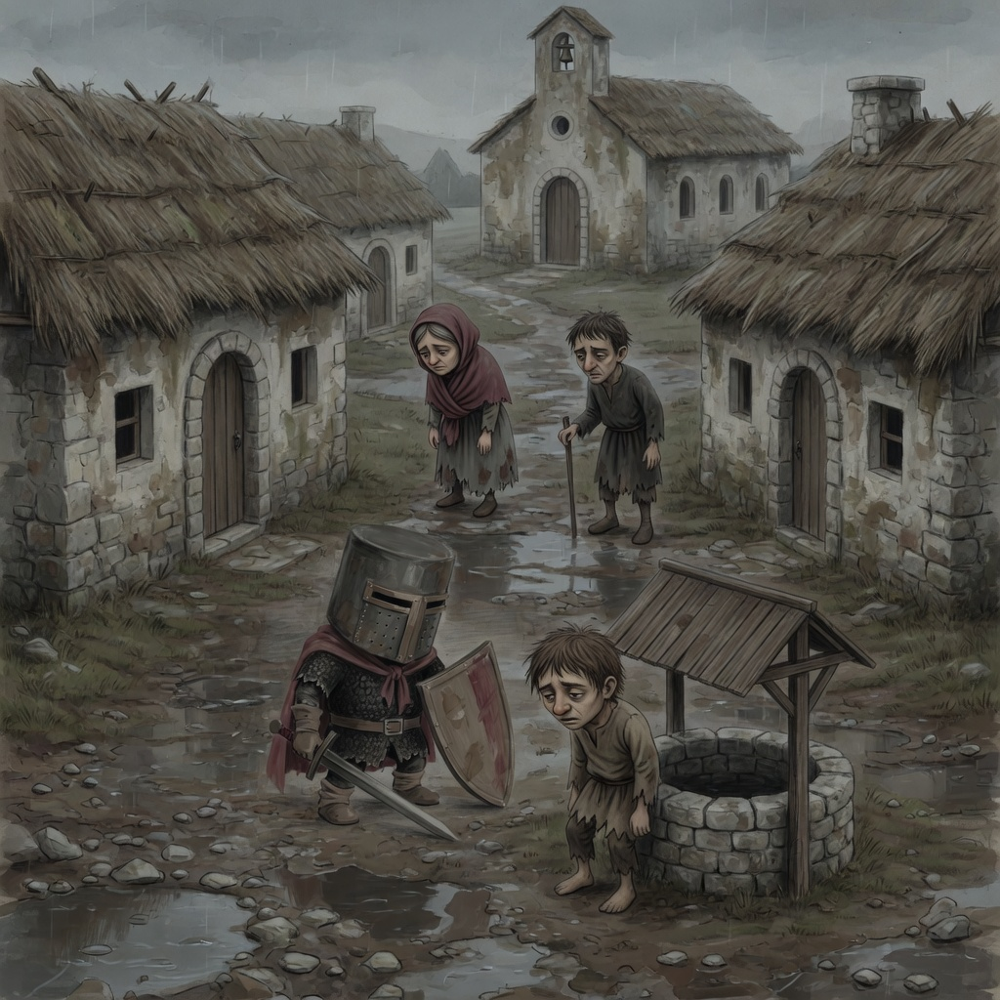
G05 · S49 · Grok · revise
Rain lane / navigation
The exact S49 helmet, mail, scarf, shield and painting are recognizable; palette and light are shared.
Held back as a gameplay solution: low camera, large illustration-scale figures, longer-bodied neighbors and an extra villager. The v02 prompt removes the duplicate helmeted neighbor seen in v01.
G06 · S49 · Grok — Burned mill / defensive encounterNeeds revision · camera / anatomy / framing
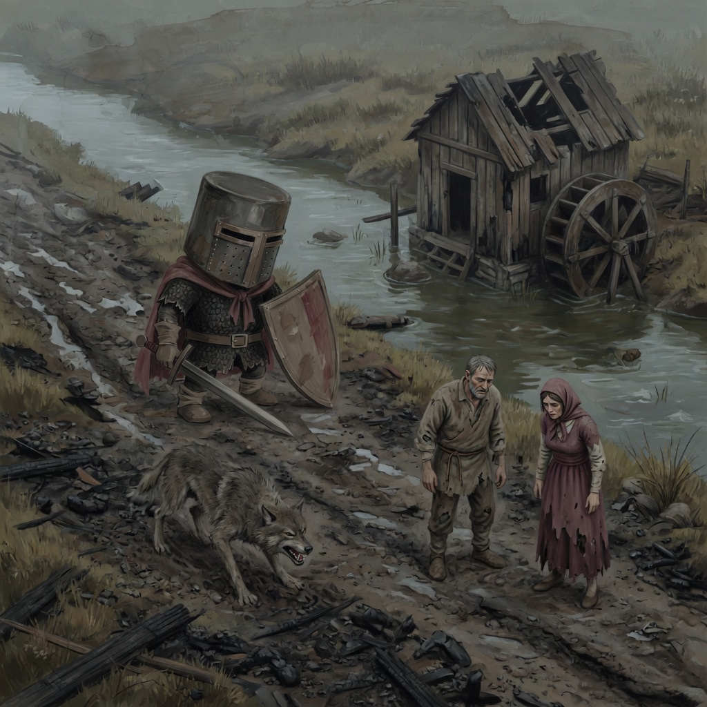
G06 · S49 · Grok · revise
Burned mill / defensive encounter
The S49 knight and muddy painted riverbank share subdued color and light; the player is comparable in height to the neighbors.
Held back: neighbors use realistic anatomy rather than the knight's cute squat proportions; actor scale is too large for the requested zoomed-out game view. Wolf/mill scene reads as an illustration.
G07 · S49 · Grok — Church refuge / explorationNeeds revision · camera / anatomy / framing
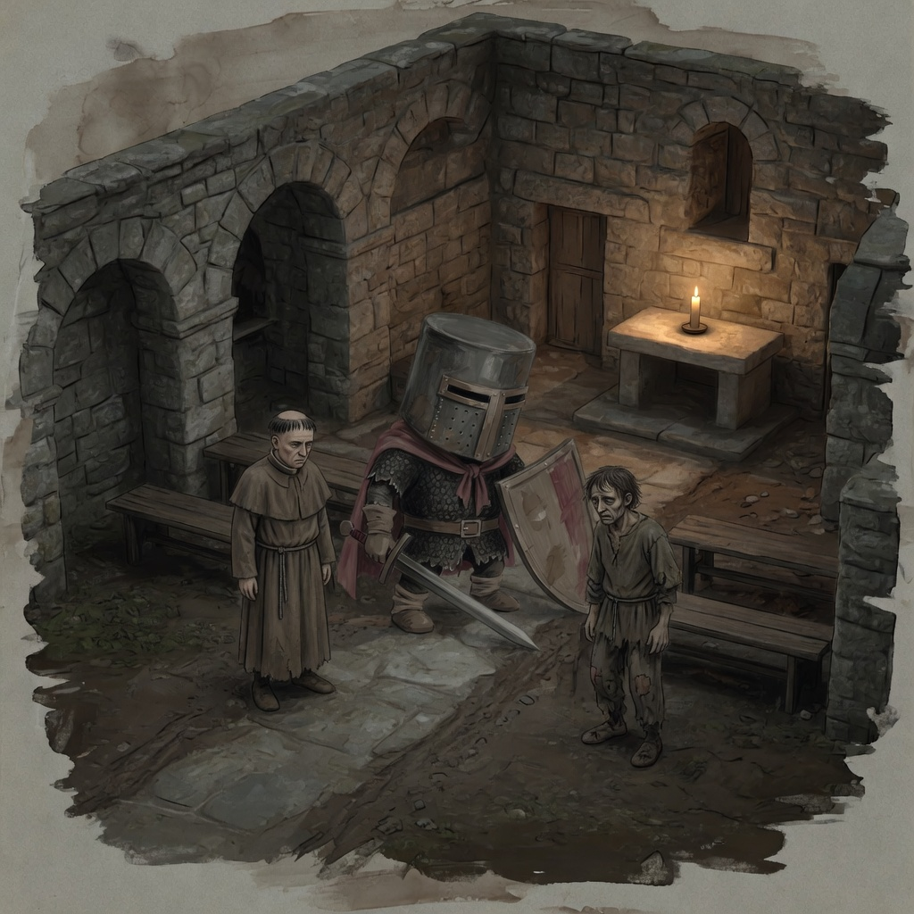
G07 · S49 · Grok · revise
Church refuge / exploration
S49 identity and washed paint extend into a dim stone interior; human heights are broadly comparable.
Held back: neighbors are much more anatomically realistic and the close framing reads as a scene illustration rather than a game-level view.
G08 · S49 · Built-in — Blighted rye / traversalFor your review · inspected, not production-approved
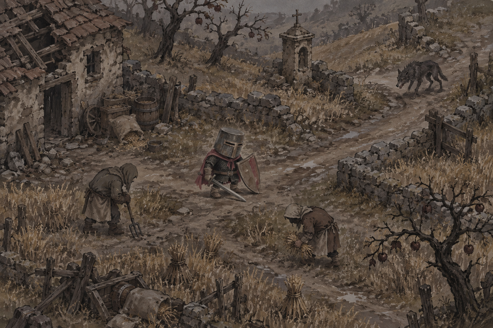
G08 · S49 · Built-in · pending
Blighted rye / traversal
S49's huge distinctive helmet, scarf, original shield and broad painted texture remain recognizable. Muddy pigment and diffuse light carry across the rye, buildings and people. Human figure heights are comparable, with hunched farmers.
For review: figures occupy more screen height than the 8–10% prompt target; farmers are less exaggerated than the knight. Environment density and calibrated camera are not approved.
G09 · S49 · Built-in — Lamp-lit courtyard / interactionFor your review · inspected, not production-approved
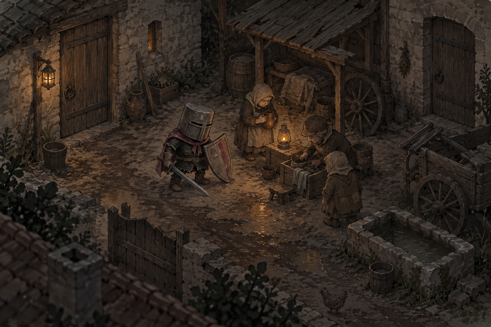
G09 · S49 · Built-in · pending
Lamp-lit courtyard / interaction
S49 costume and painting are retained in a muddy courtyard. Lamp color affects buildings, cloth and iron consistently; adjacent standing figures are close in total height.
For review: framing is closer than the requested game-scale target; other people are less squat. Surface highlights and lighting intensity remain art-direction choices.
G10 · S49 · Built-in — Grain store / investigationFor your review · inspected, not production-approved
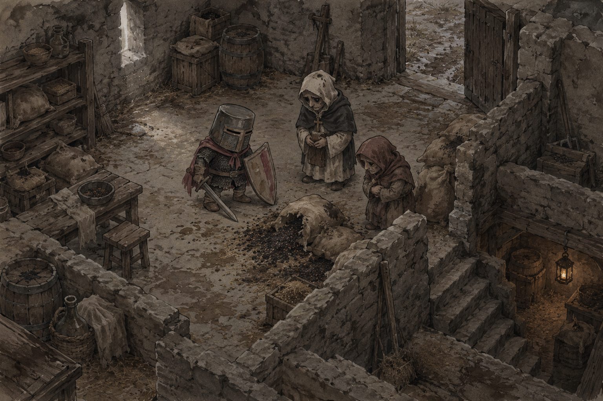
G10 · S49 · Built-in · pending
Grain store / investigation
S49 character, cutaway stone rooms and diseased grain share dirty grey-brown painted marks and common window light. Player and clergy occupy similar world scale.
For review: the standing cleric is somewhat taller and less squat; this is a close interior study rather than a distant full-level frame. Exact period accessories and camera remain unverified.
G11 · S13 · Grok — Rain lane / navigationNeeds revision · camera / anatomy / framing
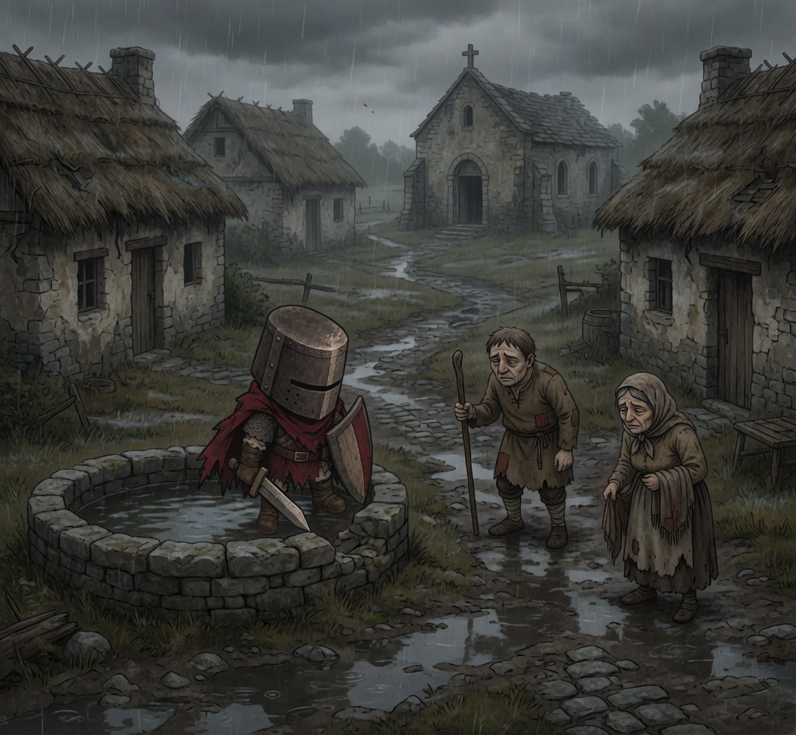
G11 · S13 · Grok · revise
Rain lane / navigation
The S13 huge barrel helmet, ragged wine cloth and short wrapped legs are recognizable in a dreary wet lane.
Held back: the knight appears inside the well footprint, outdoor perspective has a low horizon, and villagers have much longer adult bodies. This is not a correct gameplay composition.
G12 · S13 · Grok — Burned mill / defensive encounterNeeds revision · camera / anatomy / framing
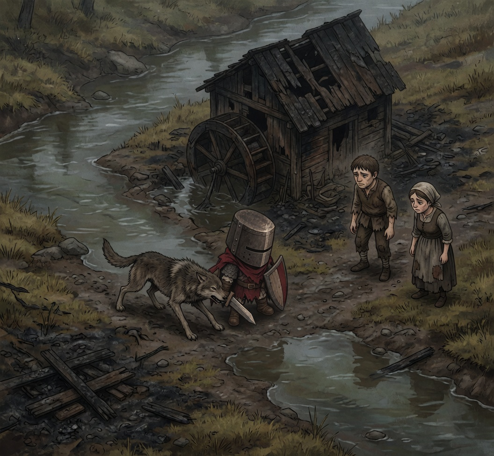
G12 · S13 · Grok · revise
Burned mill / defensive encounter
S13 worn helmet, torn scarf/cape and compact body are retained; riverbank palette and shading are shared with other actors.
Held back: neighbors have long realistic anatomy, characters are too large in the frame, and the knight's stance does not clearly depict the requested defensive action.
G13 · S13 · Grok — Church refuge / explorationNeeds revision · camera / anatomy / framing
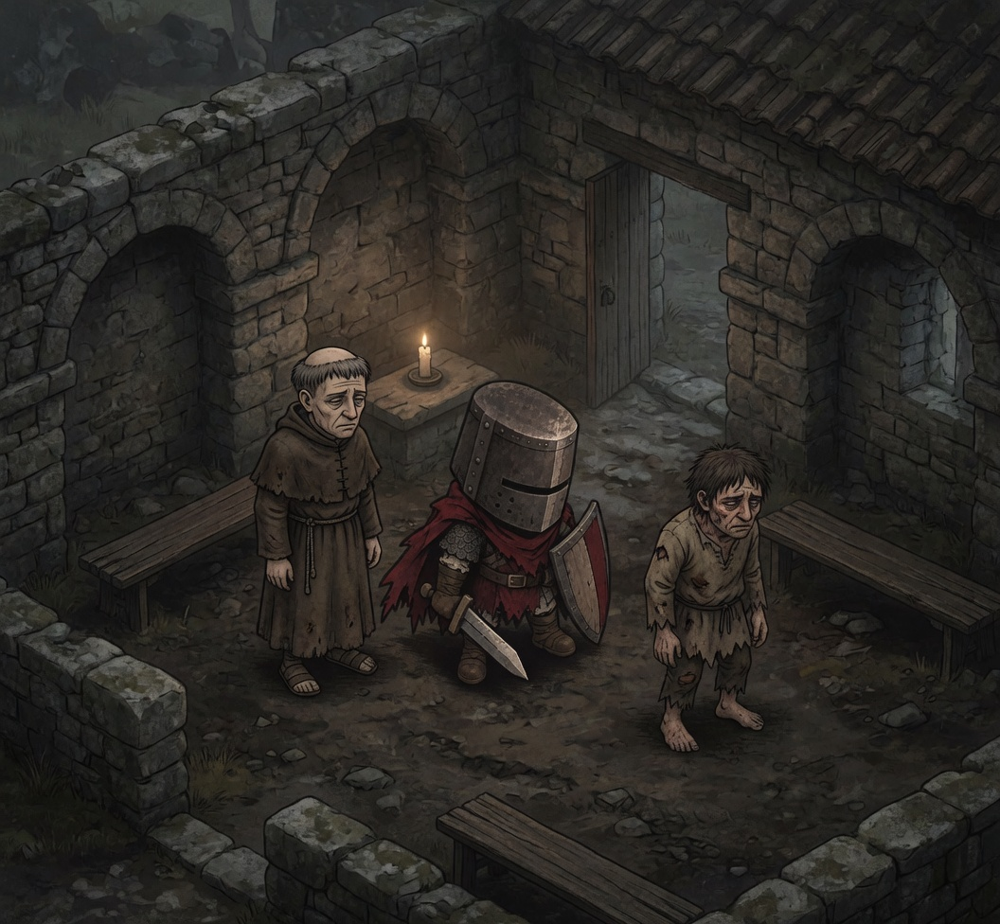
G13 · S13 · Grok · revise
Church refuge / exploration
S13 design, dirty texture and restrained candle light extend into the church refuge. Human total heights are comparable.
Held back: unarmored people have realistic body/head ratios; framing is a close illustrated vignette rather than the intended wider game view.
G14 · S13 · Built-in — Blighted rye / traversalFor your review · inspected, not production-approved
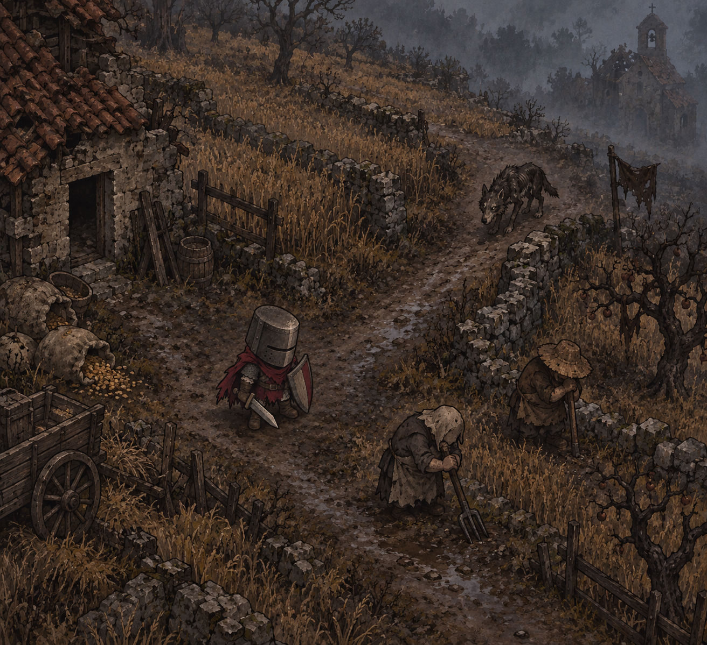
G14 · S13 · Built-in · pending
Blighted rye / traversal
S13's huge helm and especially tiny body are preserved. Grainy painted terrain and people share subdued ochre/charcoal, broken edges and overcast light. Farmers match world scale while bending.
For review: the source has been turned toward the ground plane, changing some shield/cloth detail visibility; apparent camera is elevated but uncalibrated. The provider returned a portrait-like aspect ratio.
G15 · S13 · Built-in — Lamp-lit courtyard / interactionFor your review · inspected, not production-approved
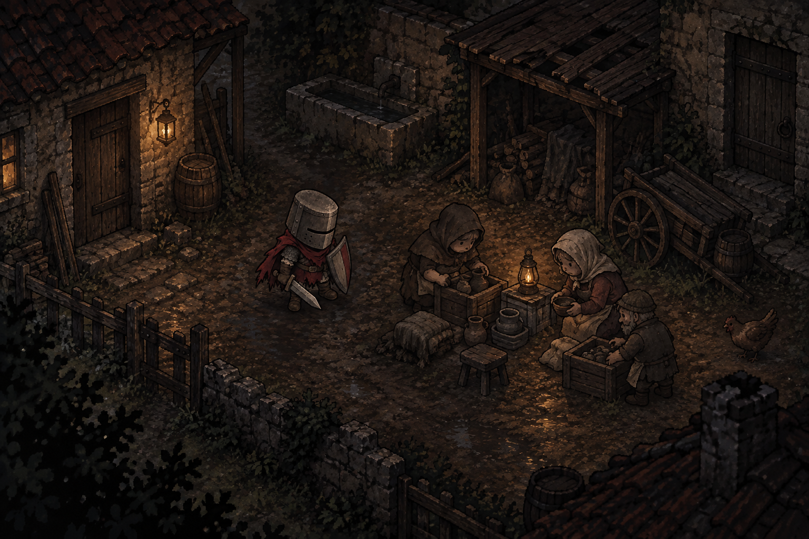
G15 · S13 · Built-in · pending
Lamp-lit courtyard / interaction
S13's squat silhouette and ragged burgundy cloth remain clear. The entire courtyard shares granular dark marks and dirty lamp light; neighbors are short with oversized heads and similar total heights.
For review: neighbors' simplified eyes may read too cute; tiny mail/rivet detail is simplified at screen scale. The requested 8–10% actor-height target was not achieved.
G16 · S13 · Built-in — Grain store / investigationFor your review · inspected, not production-approved
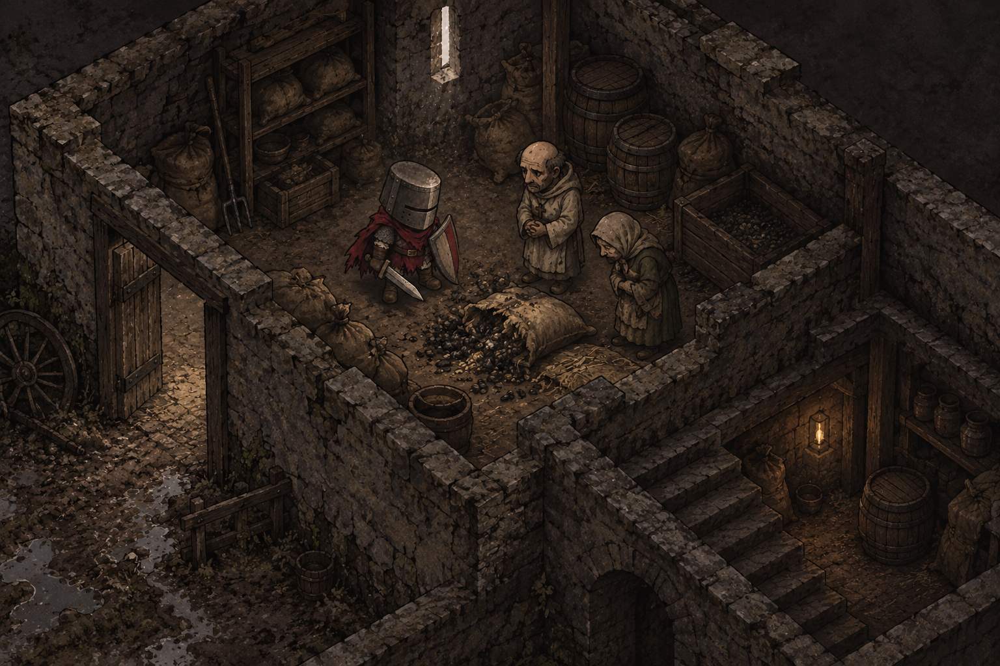
G16 · S13 · Built-in · pending
Grain store / investigation
S13 identity is retained among compact cleric/villager shapes. Grain-store topology, dirty surfaces and window/lamp light form one drawn world.
For review: cleric height is somewhat greater and head/body ratios vary; props and door scale need a production specification. Camera is not measured.
G17 · S15 · Grok — Rain lane / navigationNeeds revision · camera / anatomy / framing
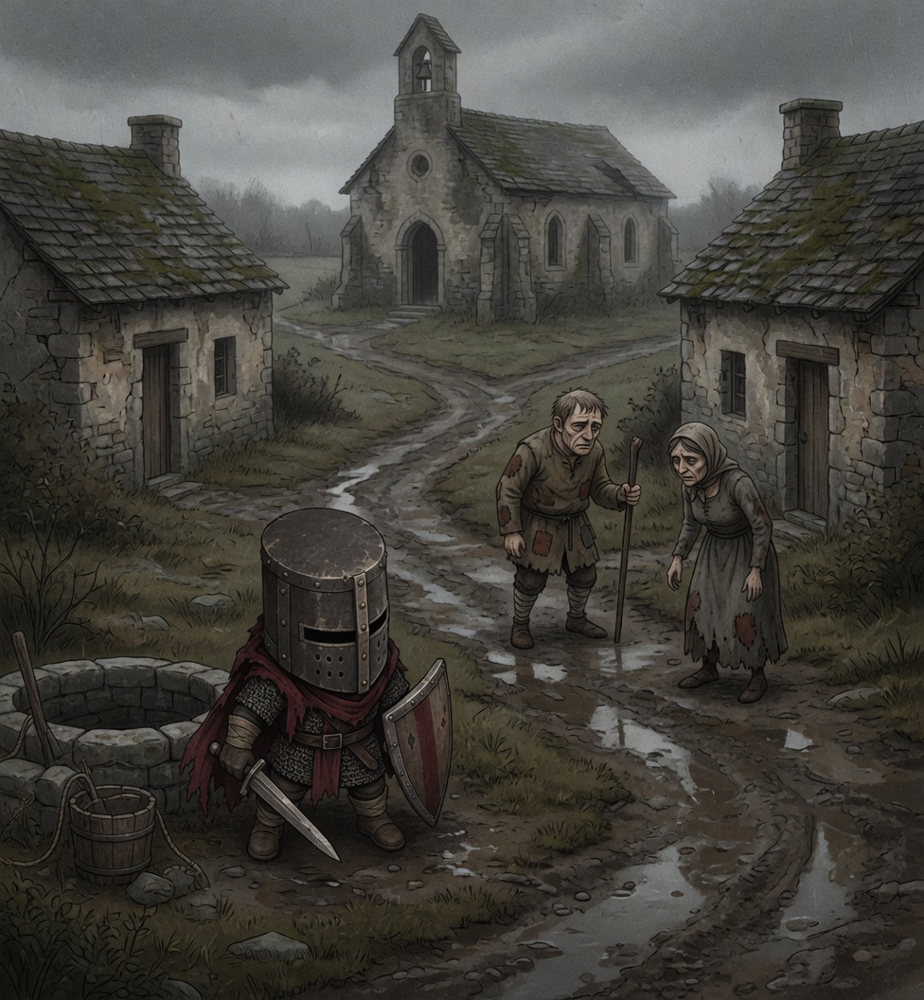
G17 · S15 · Grok · revise
Rain lane / navigation
S15's vertical rivet strips, intact greathelm, mail and scarf are recognizable; character/world color is subdued and shared.
Held back: low outdoor horizon and long-bodied villagers defeat the cute isometric game grammar. The player is too large relative to the screen, though not several times taller than people.
G18 · S15 · Grok — Burned mill / defensive encounterNeeds revision · camera / anatomy / framing
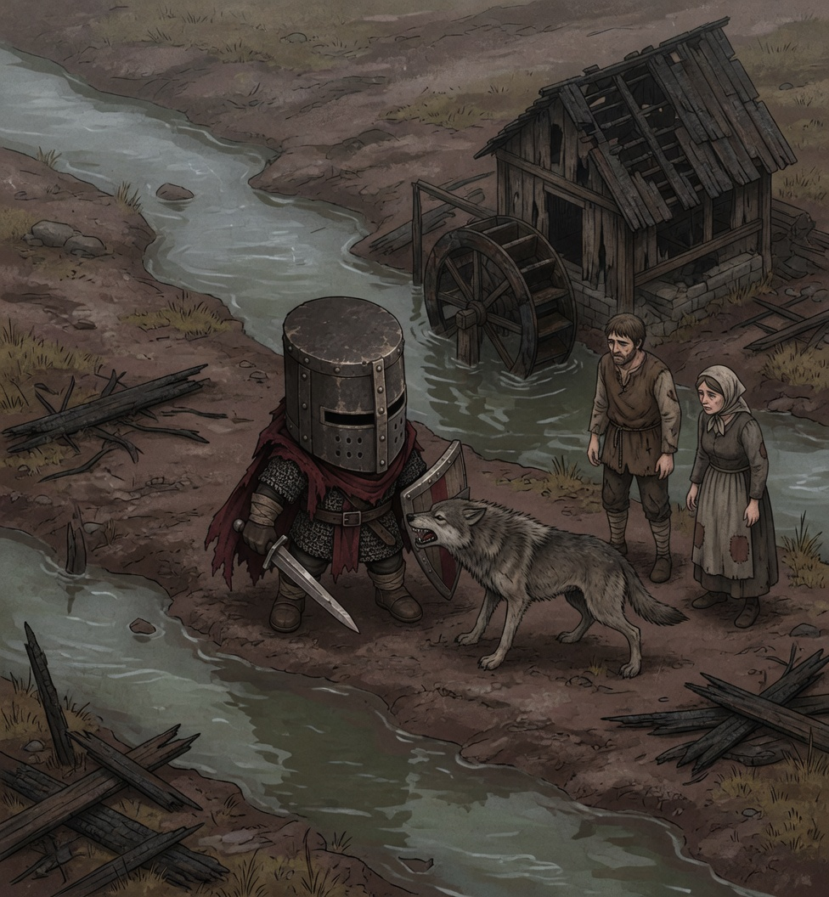
G18 · S15 · Grok · revise
Burned mill / defensive encounter
S15 helmet construction, compact armored body and kite shield carry into the river encounter with consistent muddy color.
Held back: villagers are less exaggerated than the knight, actor framing is too close, and the scene still reads as a narrative illustration.
G19 · S15 · Grok — Church refuge / explorationNeeds revision · camera / anatomy / framing
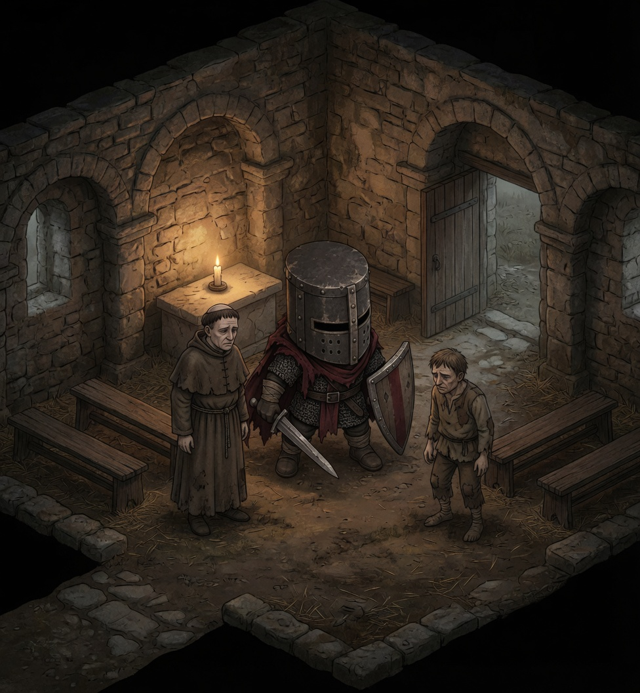
G19 · S15 · Grok · revise
Church refuge / exploration
S15's heavy outlined, granular character treatment is visible in a dim church cutaway with matching palette.
Held back: neighbors have smaller heads and longer bodies than the selected knight; close scene composition and smooth stone treatment soften the reference's grain.
G20 · S15 · Built-in — Blighted rye / traversalFor your review · inspected, not production-approved
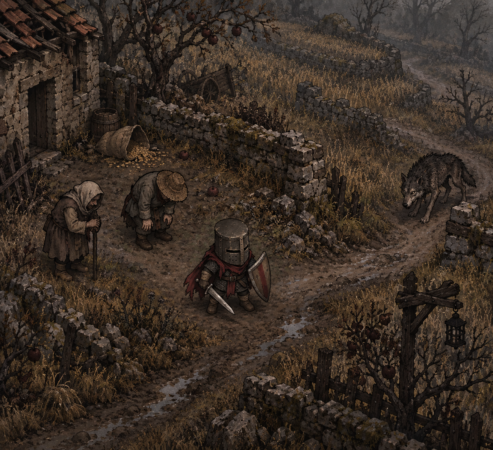
G20 · S15 · Built-in · pending
Blighted rye / traversal
S15's distinctive helmet strips, ring mail and sharper granular contours carry into a dark rye-path scene. Hunched people and player are similar world size; ground, foliage and actors share material darkness.
For review: visible brush/edge treatment is more uniformly dense than the source; facial anatomy is less exaggerated. Provider returned a portrait-like aspect ratio; camera uncalibrated.
G21 · S15 · Built-in — Lamp-lit courtyard / interactionFor your review · inspected, not production-approved
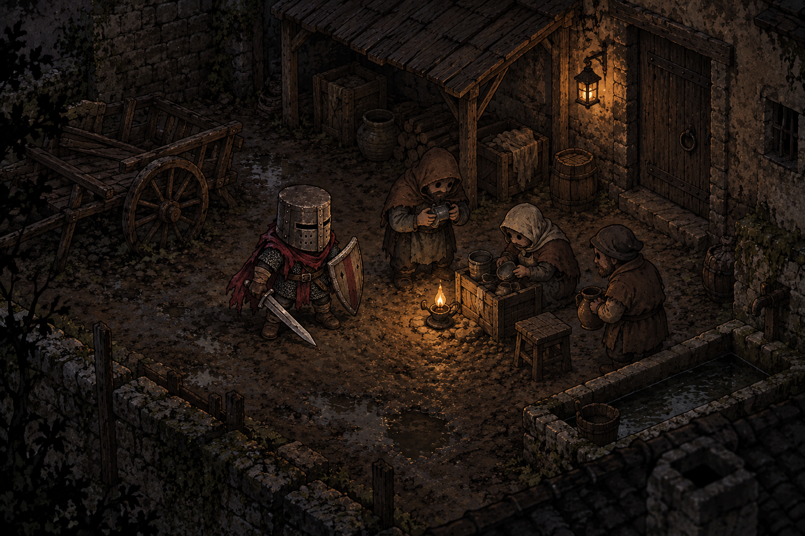
G21 · S15 · Built-in · pending
Lamp-lit courtyard / interaction
S15 design and prominent mail/helm details are preserved in an oil-lit courtyard. Villagers are short with large heads, similar total height, and the same dirty drawn texture and warm local light.
For review: people's eyes may be too large/blank; lighting remains modeled by drawn values and may need further flattening. Figures are larger than the prompt's screen-height target.
G22 · S15 · Built-in — Grain store / investigationFor your review · inspected, not production-approved
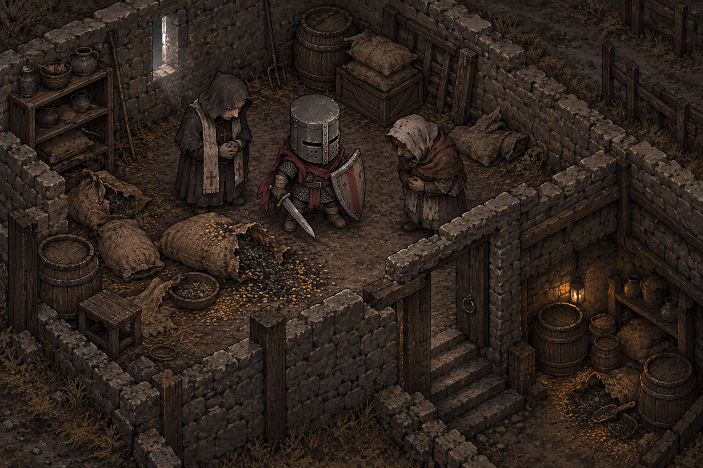
G22 · S15 · Built-in · pending
Grain store / investigation
S15's costume, riveted faceplate and granular contours remain recognizable. Shared slate-brown palette, contact shadows and cutaway room topology connect all objects and actors.
For review: hunched neighbor and standing cleric differ in apparent height; small gear details are simplified. Pixel density, interaction space and calibrated camera need review.
G23 · S01 · Grok — Rain lane / navigationNeeds revision · camera / anatomy / framing
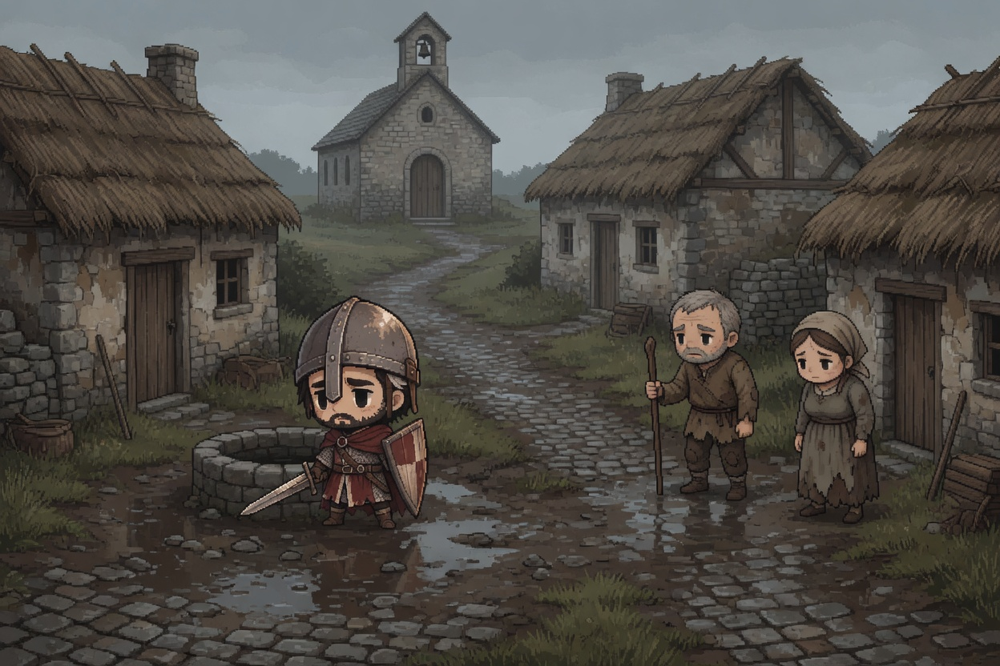
G23 · S01 · Grok · revise
Rain lane / navigation
S01 original nasal helmet, beard, wine cloth, shield marking and fine pixel shapes are retained. Neighbors are cute and broadly comparable in world height.
Held back: a horizon and near eye-level figures undermine the intended elevated orthographic game view. World detail density differs from the character pixels; framing is too close.
G24 · S01 · Grok — Burned mill / defensive encounterNeeds revision · camera / anatomy / framing
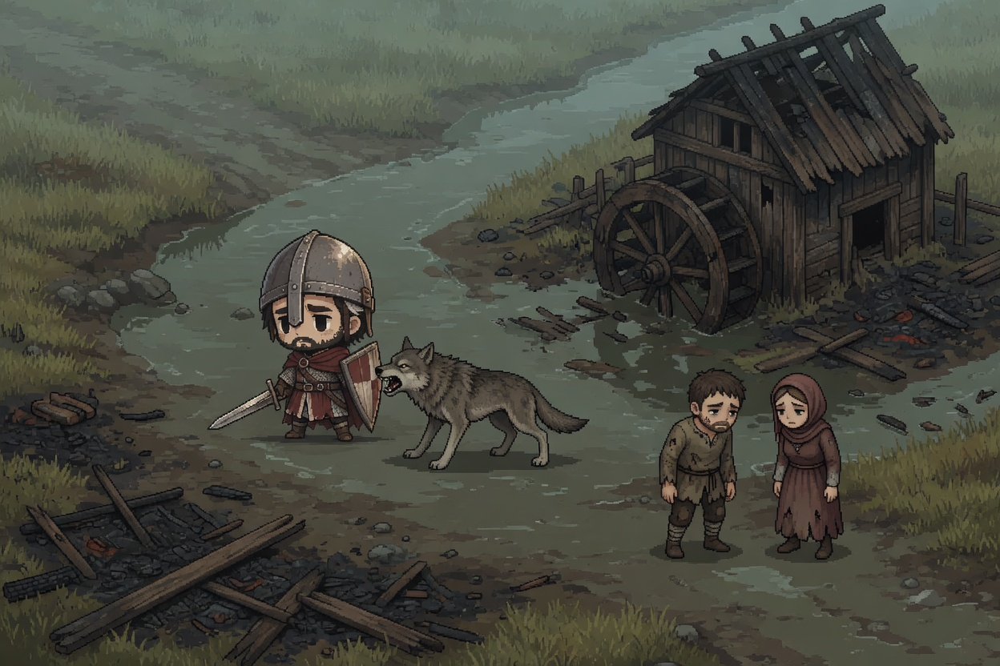
G24 · S01 · Grok · revise
Burned mill / defensive encounter
S01 identity and stepped pixel surfaces are retained in a riverbank encounter with a common muted palette. The player is not oversized against nearby people.
Held back: neighbors have longer bodies, the camera is shallower than intended, and the scale/composition still leans toward scene illustration rather than a wide playable map.
G25 · S01 · Grok — Church refuge / explorationFor your review · inspected, not production-approved
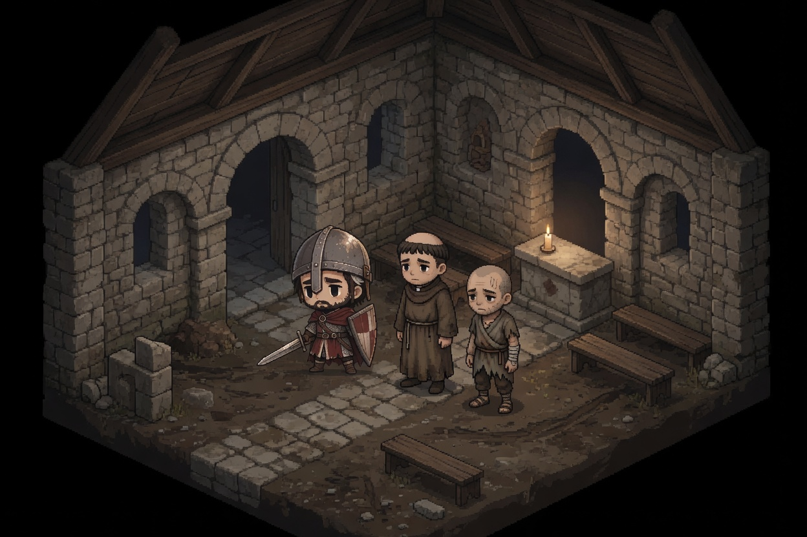
G25 · S01 · Grok · pending
Church refuge / exploration
S01 original helmet/face and fine pixel construction extend across cute cleric/villager shapes and a dark church cutaway. Figures are comparable in height and belong to the same muted drawn world.
For review: the small room has a diorama-like outline and the figures are larger than the intended zoomed-out target. Camera is not calibrated; priest clothing and symbols are exploratory.
G26 · S01 · Built-in — Blighted rye / traversalFor your review · inspected, not production-approved
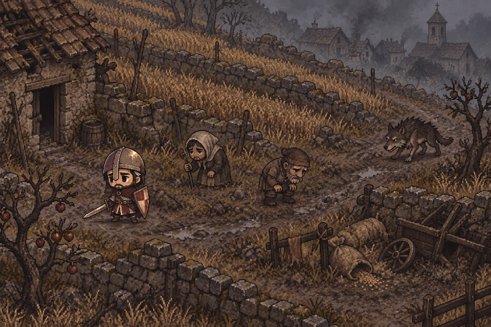
G26 · S01 · Built-in · pending
Blighted rye / traversal
S01 helmet/face, proportions, mail, wine cloth and shield marking remain clear. Fine pixel clusters cover both actors and terrain; hunched neighbors are similarly sized, with weary expressions.
For review: distant architecture and wolf detail are denser than actor faces, and the field view is less open than the prompt sought. Actor screen-height target and measured camera remain unresolved.
G27 · S01 · Built-in — Lamp-lit courtyard / interactionFor your review · inspected, not production-approved
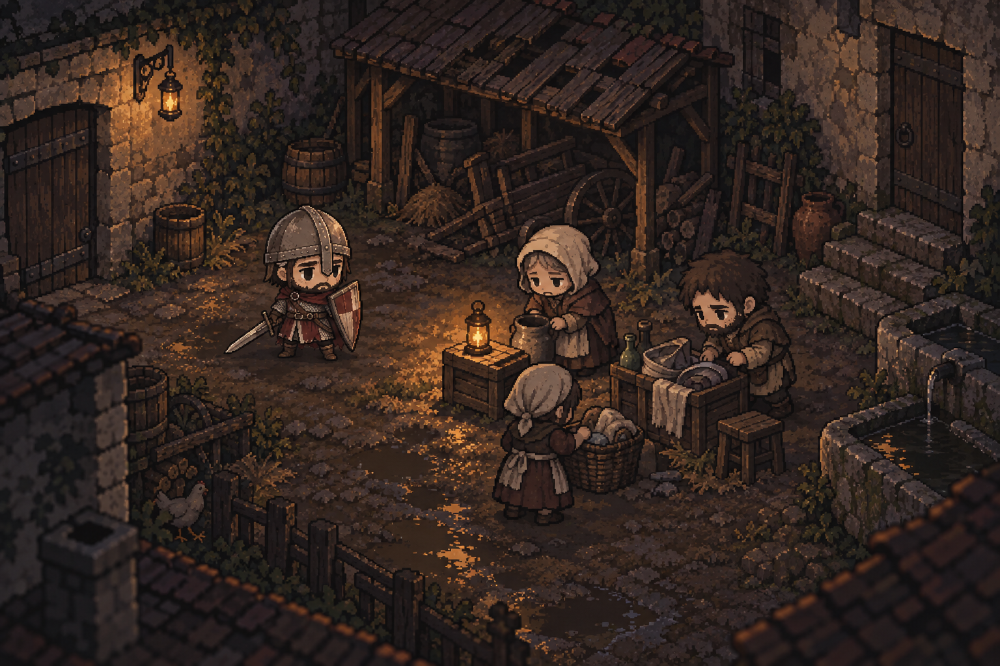
G27 · S01 · Built-in · pending
Lamp-lit courtyard / interaction
S01 identity carries into a pixel courtyard; every person has the same cute compact grammar and close total figure height. Small warm lamp values and dirty terrain connect actors to the environment.
For review: people and surfaces are more densely pixel-textured than the original character; lighting and tiny costume features need review. This is a close gameplay vignette.
G28 · S01 · Built-in — Grain store / investigationFor your review · inspected, not production-approved
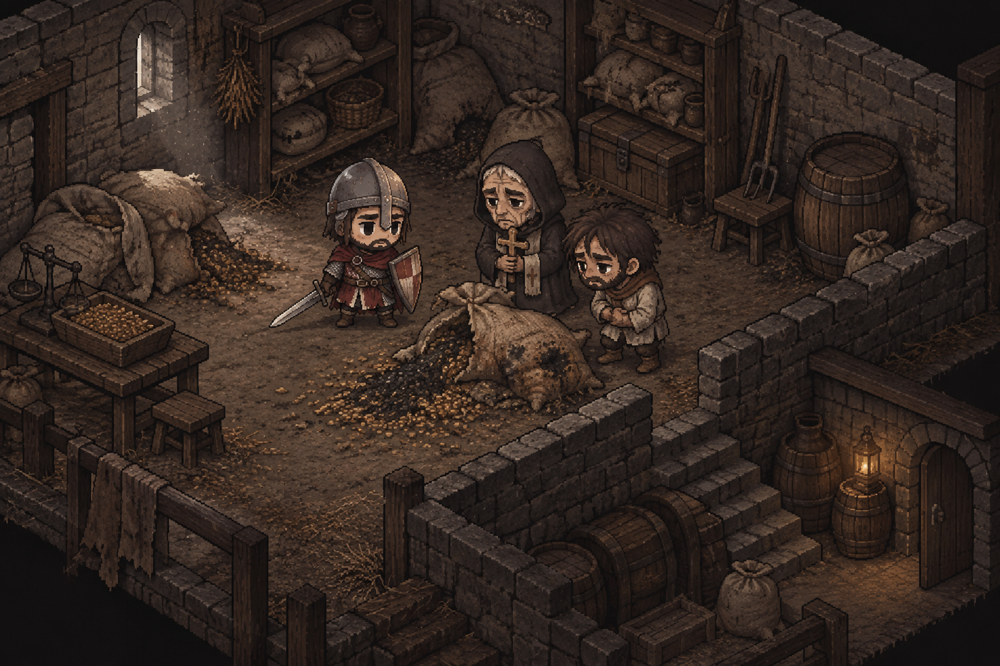
G28 · S01 · Built-in · pending
Grain store / investigation
S01 original character and stepped pixel medium are extended to a compact grain-store map. Cleric and villager have oversized heads, short bodies and near-equal total height, with shared dirty window light.
For review: religious accessories and room layout are concept proposals, not approved story assets; faces and gear are simplified. Camera and production pixel scale remain open.